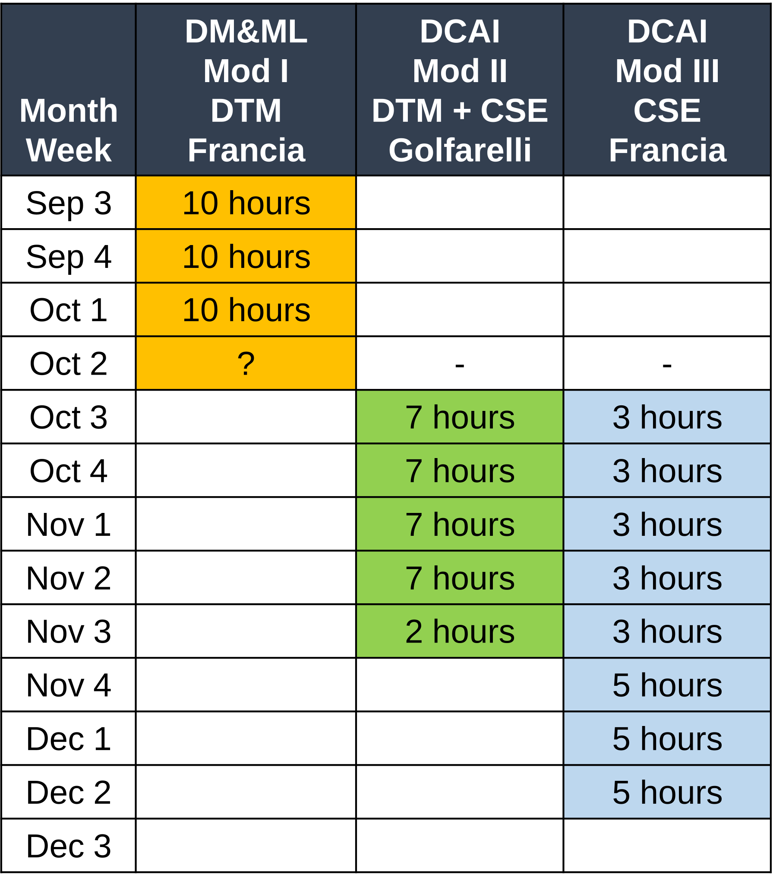
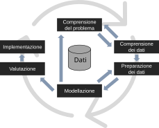
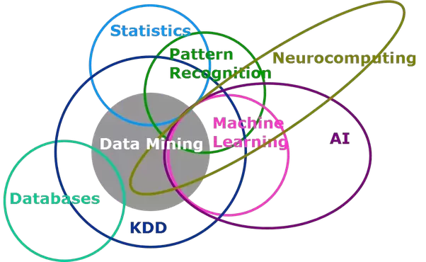
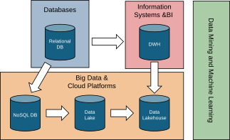
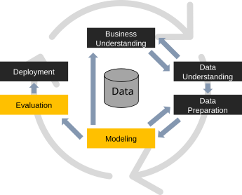

Machine Learning and Data Mining (Module 2)
Introduction
DISI — University of Bologna
m.francia@unibo.it
Modules
Module I (DM&ML), 30h: (Prof. Francia)
- Goal: Introduction to Machine Learning
Module II (DM&ML + DCAI), 30h: DTM + ISI (Prof. Golfarelli)
- Goal: ???
Module III (DCAI), 30h: ISI (Prof. Francia)
- Goal: ???

Data Mining and Machine Learning: Course Goals
Being able to carry out the whole data mining process, that is more complex than just running ML algorithms
- Creating/broadening a tool box of machine learning algorithms
- ML algorithms related to structured data (e.g., association rules)
- Gain sensitivity in applying ML techniques in real business contexts
- Case studies and exercises


(Oral) Exam
Questions on all (theoretical and practical) aspects of the course and an assignment
- Be prepared: you have to wait 1 month before trying again (in any case)
- How do you know if you are prepared?
- Open random slides and check the titles. Can you expose them and make a self-contained speech?
- Interaction during the lectures/labs is considered in the final evaluation
(Oral) Exam
Two separate and independent exam sessions (the other w/ Prof. Golfarelli), the final grade is the average of the two exams
- No scheduled dates, just book when you are prepared
- Prof. Francia: use the Booking page (at least one week in advance, no later than 45 days)
- Prof. Golfarelli: via e-mail
- The two modules must be discussed within 15 days
According to the University’s regulation
- Exams must be in presence
- Cannot refuse a grade more than once
On the day of the exam (~30 minutes per person):
- 3 questions on different topics about the whole program
- The 1st question is a discussion with slides about your assignment
Final Assignment
You must do an assignment among two possible options:
- Option 1: Study of an algorithm among those in the literature (read, understand, summarize, test a paper)
- Option 2: Analysis of a dataset following the CRISP-DM methodology
Final Assignment: Option 1
Ask me for a list of possible papers to study (with available implementation)
- Study the paper
- Apply the algorithm to a real dataset
Final Assignment: Option 2
The assignment on Machine Learning is about coding an AI system (in a group of 2 people, at maximum)
- Find a problem of your interest
- Get the data (a public dataset with real data)
- Define your strategy (algorithms)
- Describe the insights you extracted from your analysis
Once defined your project:
- Send me an email to discuss the details of your project
- ~300 words, including the datasets description, a link to the public dataset, and the main challenges
- The dataset must require some pre-processing
- After my approval, register the group and the project here: https://forms.gle/aZ4L7azCF43qqpzk6
- Now you can start your project on Google Colab
You are responsible for your code (“I do not know how to program” is not a valid excuse!)
- If you cannot explain your code and your choices…
- … and/or you copied and pasted it from colleagues or LLMs
- … you will retake the exam
When the material is ready, group members must book the exam on the same day
Final Assignment: apply to both options
Once the project is completed:
- Write a 4-page paper about the assignment. Mandatory points:
- Use Latex (https://www.overleaf.com/)
- Use this template (https://ieeecs-media.computer.org/assets/zip/ieeetran-final_sub.zip)
- Option 1, sections:
- Introduction (~0.5 page; the context of application of the algorithm)
- Summary of the algorithm (~2 pages; what did you do and how)
- Results (~1 page; results and insights)
- Conclusions (~0.5 pages; summary)
- Option 2, sections:
- Introduction (~1 page; including group organization and the work done by each member)
- Pipeline description (~1.5 pages; what did you do and how)
- Results (~1 page; results and insights)
- Conclusions (~0.5 pages; summary)
- Upload the paper, assignment, and presentation into a GitHub repository
- Presentation must be 10-minute long (no more than 10/12 slides)
- The assignment must be executable on Google Colab without errors
- Share (with me) the GitHub repository
Teaching material
You will find all you need on Virtuale.
- Slides and Python notebooks to be opened on Google Colab
However, keeping up the pace with machine learning and data mining is hard
- There is a rapid development of trends and technologies, and not all of them will survive
- Books are easily outdated with respect to cutting-edge services and technologies
- Research papers (often) describe solutions that are not commercial yet
- (IRL) You will need to deal with a lot of (bad) documentation, online articles, etc.
Rule of thumb
- Understand the general concepts and fundamentals
- … and ask questions!
Books
Slides and notes are sufficient to prepare for the final exam.
- You can find them on the Virtuale platform (https://virtuale.unibo.it/)
However, I suggest you read the books:
- Aurélien Géron. Hands-on Machine Learning with Scikit-Learn, Keras & TensorFlow.
- Pang-Ning Tan, Michael Steinbach, Vipin Kumar Introduction to Data Mining. Pearson International, 2006.
- Ian H. Witten and Eibe Frank. Data Mining: Practical Machine Learning Tools and Techniques, IInd Ed. Morgan Kaufmann, 2005.
Some notes:
- The books are intended as a support
- The books are available for free in the library
- Carefully check the summary and select our topics
(My) Office hours
Lectures start/end 10 minutes later/earlier than the time stated in the teaching calendar.
- Please, arrive on time to avoid interruptions
Office hours:
- Short questions: before/after each lecture
- Longer questions: send an email to book an appointment
If you need help with coding and labs, you can ask me and the designated tutor
- Remember, “I do not know how to code” is not a valid excuse!
Context

Overview
Tentative outline
Theory (slides are very dynamic)
- Introduction to AI and machine learning
- Supervised lerning
- Classifiers
- Decision Trees
- Neural networks
- k-nn
- Bayesian classifier
- Multi Classifiers
- Classifiers
- Unsupervised learning
- Association Rule
- Clustering
- Anomaly Detection
Laboratories
- ???

Matteo Francia - Machine Learning and Data Mining (Module 2) - A.Y. 2025/26